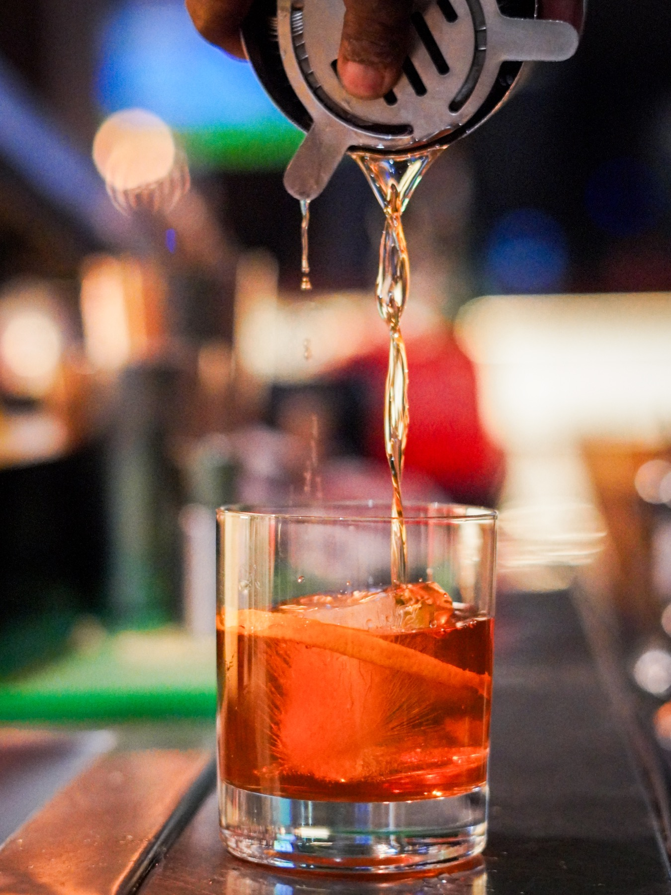
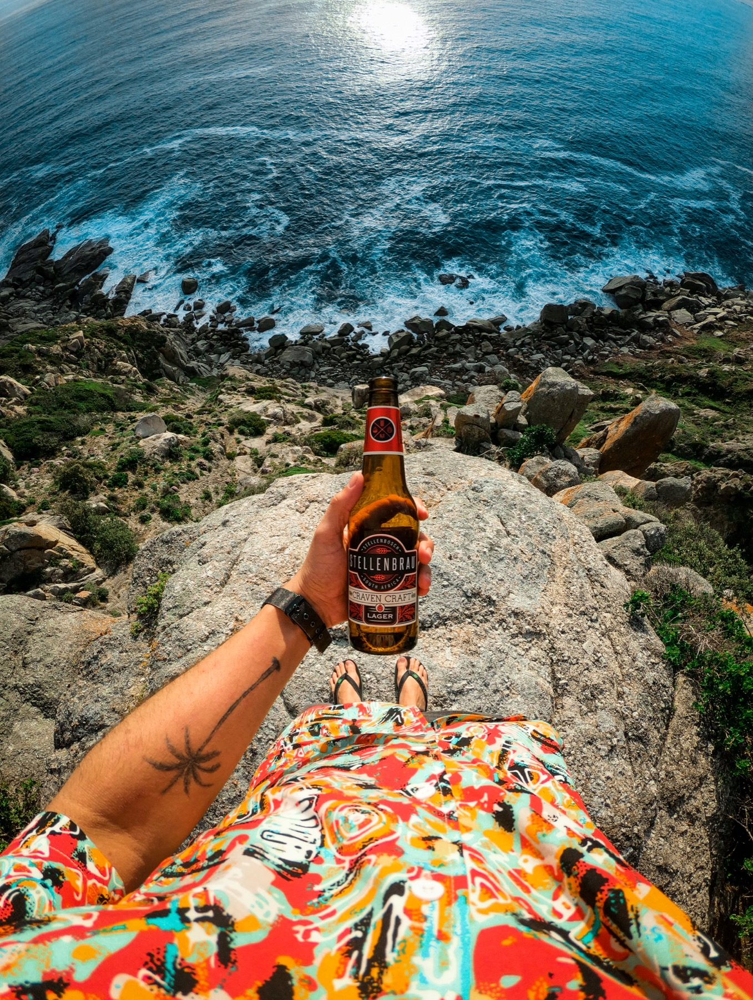
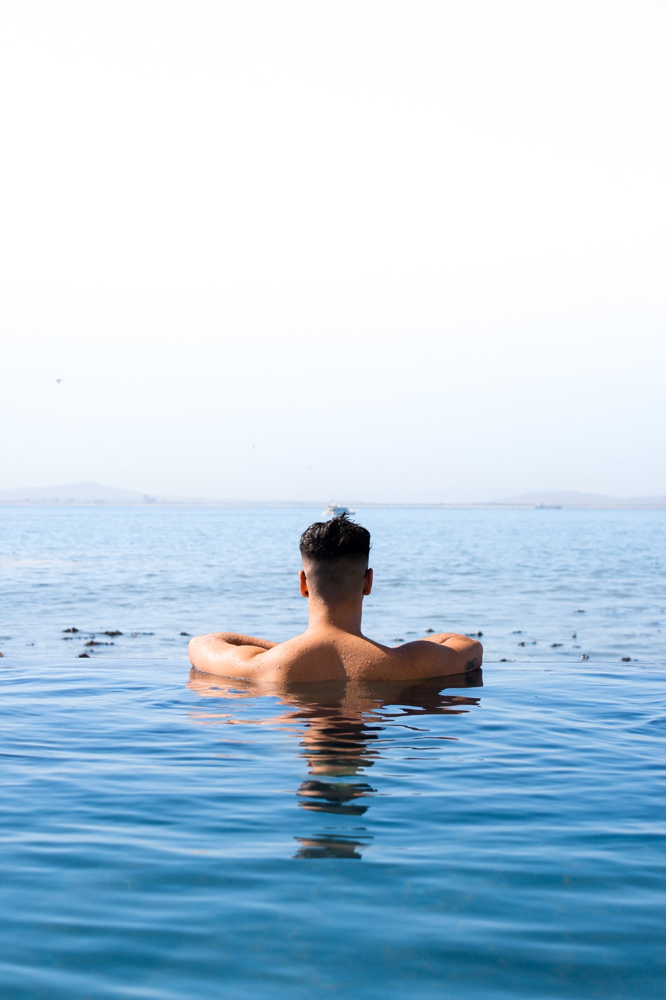
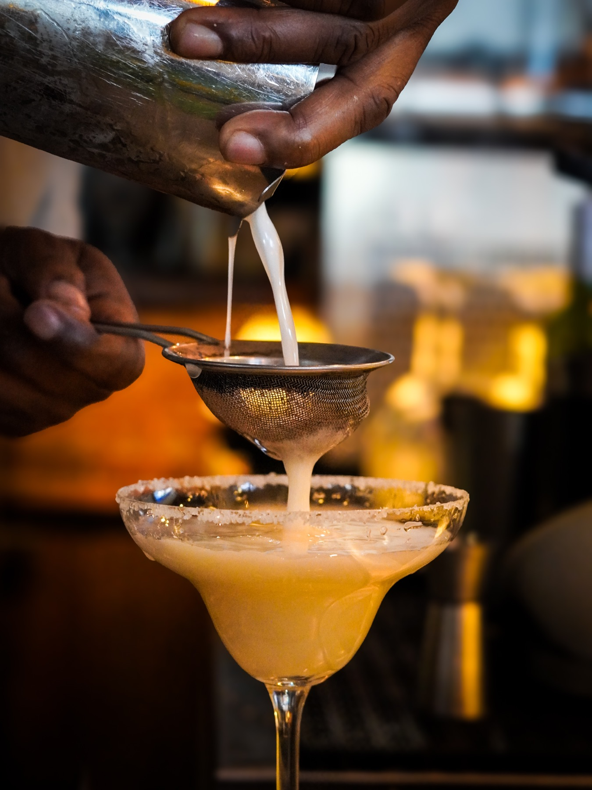
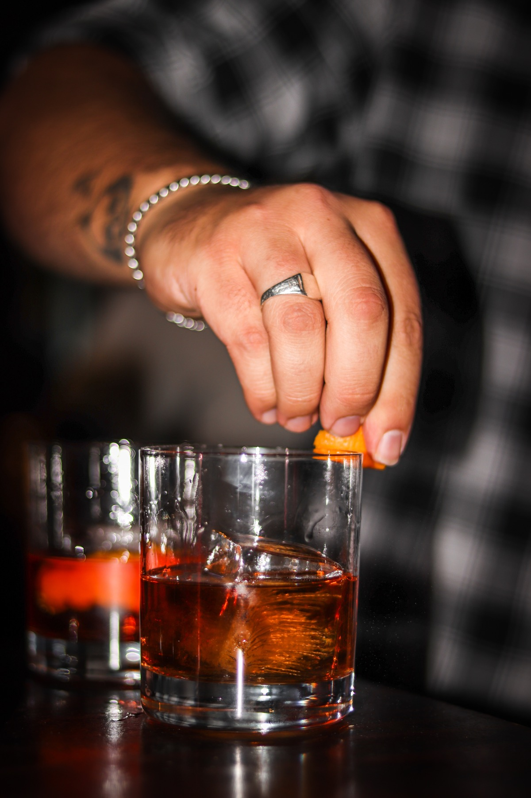
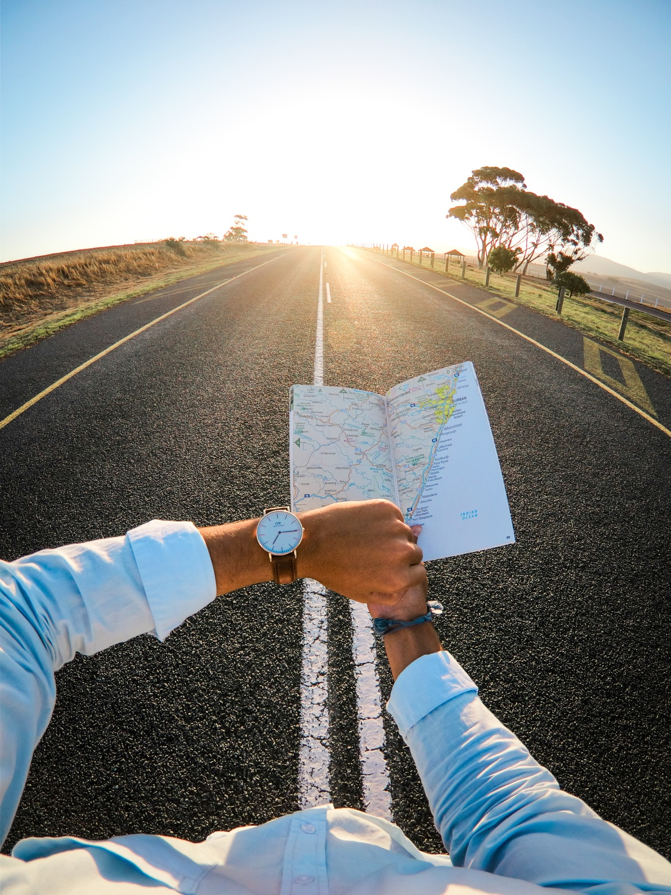

Platform instinct built through repetition.
A long runway of hobbyist content creation shaped the eye for pacing, framing, and what feels natural in-feed.
Creator track
I create social-first photo, video, event, food, drinks, and campaign content with a practical eye for platform behaviour and audience growth.

drink
brand
travelCreative foundation
A long runway of hobbyist content creation shaped the eye for pacing, framing, and what feels natural in-feed.
International and South African brand work, on-site media, campaign storytelling, events, food, and drinks content.
Content system
These frames are ready for real Instagram posts, reel covers, and campaign stills. The structure is built to swap placeholders for live media without redesigning the page.

cocktail
bar
travelFeatured proof point
Over roughly a year and a half, Dizzys achieved 550%+ organic follower growth while I produced on-site event, food, and drinks content.
TODO: add post examples, dates, content cadence, engagement patterns, and selected creative.Creator case studies
Bar, drinks, event, and atmosphere content built around consistent organic growth and venue personality.
TODO: add media embeds, dates, cadence, and selected posts.First-person visual storytelling for places, products, and moments that need a more lived-in creator feel.
TODO: add brand names, deliverables, permissions, and sample assets.